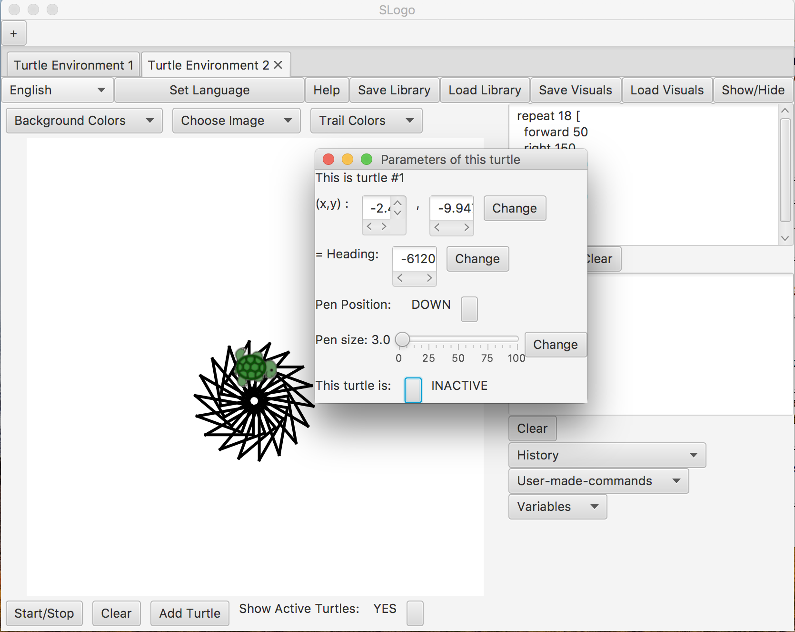
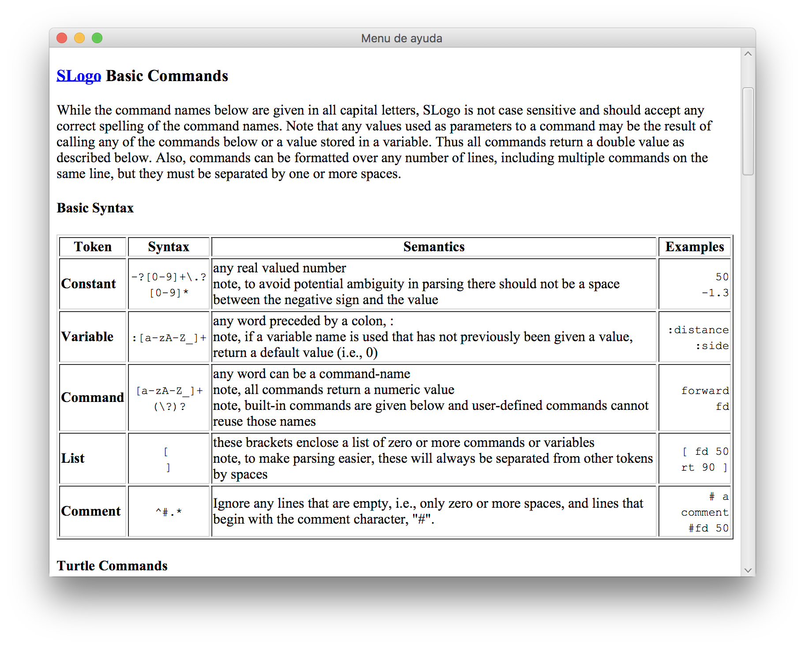

Logo
Logo is a fun programming toy/language that lets you type code to make "turtles" draw things on a canvas. Me and my team implemented it in Java a while back. Try out the "load library" and add turtle functions- you can do cool things like making one turtle draw spirals while another turtle changes its color and paints a hexagon.
Download JAR file  